Lieber schauen statt lesen?
7 Minuten · Das Doppelspalt-Experiment visuell erklärt
Kapitel 1
Wellen, Pfeile und das Doppelspalt-Wunder
Ein Stein, ein Teich, ein Rätsel
Wirf einen Stein in einen ruhigen Teich. Du weißt, was passiert: Kreisförmige Wellen breiten sich aus, gleichmäßig, vorhersagbar, langweilig. Wirf jetzt zwei Steine gleichzeitig an verschiedene Stellen. Jetzt wird es interessant. Die Wellen der beiden Steine laufen aufeinander zu, und dort, wo sie sich treffen, passiert etwas Eigenartiges. An manchen Stellen wird das Wasser plötzlich besonders aufgewühlt – höher, wilder als von jedem einzelnen Stein allein. An anderen Stellen, manchmal nur wenige Zentimeter daneben, herrscht seltsame Ruhe.
Dieses Phänomen hat einen Namen: Interferenz. Und es ist das harmloseste, alltäglichste Ding der Welt. Wo der Wellenberg der einen Welle mit dem Wellenberg der anderen zusammenfällt, addieren sich die Höhen – das Wasser schlägt besonders hoch. Wo aber ein Wellenberg auf ein Wellental trifft, heben sie sich gegenseitig auf. Plus und Minus, Null, Stille.
So weit, so beruhigend. Jetzt lass uns denselben Effekt mit Licht beobachten. Und dann wird die Welt seltsam.
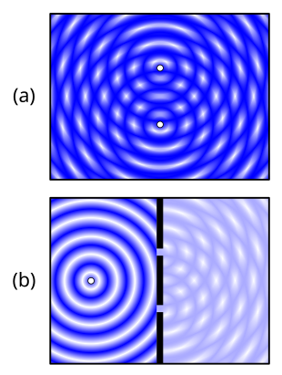
{kind=link}
Thomas Young und die Wand mit zwei Schlitzen
Im Jahr 1801 machte der englische Arzt und Universalgelehrte Thomas Young ein Experiment, das so einfach ist, dass man es auf einem Küchentisch nachbauen könnte, und das gleichzeitig so tiefgründig ist, dass die Physik zweihundert Jahre später immer noch damit ringt.
Die Idee: Nimm eine Lichtquelle. Stelle eine Wand davor, in die du zwei schmale, parallele Schlitze geritzt hast. Dahinter eine weiße Fläche. Wenn Licht aus Teilchen bestünde – aus winzigen Kügelchen, die wie Gewehrkugeln geradeaus fliegen – dann würdest du zwei helle Streifen erwarten, direkt hinter den beiden Schlitzen.
Aber das sieht Young nicht. Und zwar gleich in doppelter Hinsicht.
Erstens fächert sich das Licht hinter jedem Schlitz auf. Es fliegt nicht geradeaus durch wie eine Kugel durch ein Loch – es breitet sich aus, in alle Richtungen, als wäre jeder Schlitz selbst eine neue, winzige Lichtquelle. Dieses Auffächern nennt man Beugung.
Exkurs · Warum schon ein einzelner Spalt genügt
Im idealen Gedankenexperiment sind Schlitze unendlich schmal – mathematische Punkte. In der Realität hat jeder Schlitz eine endliche Breite. Und diese Breite hat Konsequenzen.
Stell dir den Schlitz nicht als einen Punkt vor, sondern als eine Reihe von Punkten, dicht an dicht nebeneinander. Jeder dieser Punkte innerhalb der Schlitzöffnung verhält sich wie eine eigene winzige Lichtquelle, die in alle Richtungen strahlt. All diese winzigen Quellen überlagern sich – und weil sie an leicht verschiedenen Positionen innerhalb des Schlitzes sitzen, legen ihre Beiträge leicht verschiedene Wege zurück, bevor sie auf der Leinwand ankommen.
Geradeaus, direkt hinter dem Schlitz, kommen alle Beiträge fast gleichzeitig an – sie verstärken sich. Aber unter einem schrägen Winkel sind die Wege von den verschiedenen Punkten im Schlitz unterschiedlich lang. Manche Beiträge löschen sich aus, andere verstärken sich. Das Ergebnis: Selbst ein einzelner Schlitz erzeugt ein Muster – einen breiten hellen Streifen in der Mitte und schwächere Streifen links und rechts. Und – kontraintuitiv – je enger der Schlitz, desto breiter fächert sich das Licht auf.
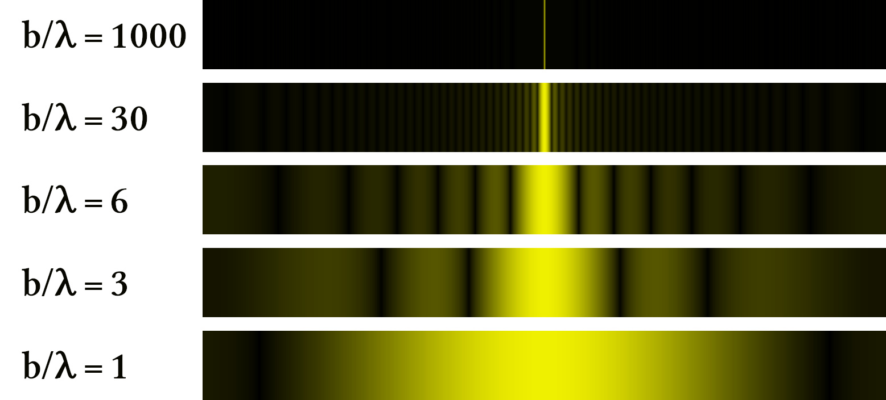
{kind=link}
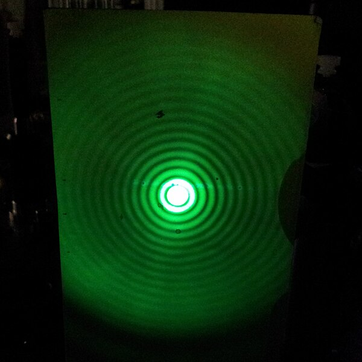
{kind=link}
Was du hier siehst, ist kein Doppelspalt-Effekt. Es ist ein Einzelspalt-Effekt – oder, bei der runden Öffnung, ein Einzelloch-Effekt. Interferenz braucht keinen zweiten Spalt. Sie braucht nur eine Öffnung, die nicht unendlich schmal ist – und die Tatsache, dass die Beiträge verschiedener Punkte innerhalb dieser Öffnung sich überlagern können.
Später, wenn wir Feynmans Pfeilmethode kennenlernen, wird klar: Auch dieses Einzelspalt-Muster ist nichts anderes als Pfeile addieren – über alle Wege durch die Öffnung. Die Physik hinter Beugung und Interferenz ist ein und dieselbe.
Aber das Entscheidende beim Doppelspalt kommt erst mit dem zweiten Schlitz. Denn jetzt gibt es zwei solcher auffächernden Lichtquellen, dicht nebeneinander. Und dort, wo sich ihre Beiträge überlagern, passiert etwas, das Beugung allein nicht erklären kann: An manchen Stellen verstärken sie sich, an anderen löschen sie sich aus. Das Ergebnis ist ein Muster aus vielen hellen und dunklen Streifen, abwechselnd, über die ganze Leinwand verteilt. Hell, dunkel, hell, dunkel. Interferenz.
Beugung und Interferenz – Richard Feynman hat später gesagt, dass niemand je den Unterschied zwischen den beiden zufriedenstellend definieren konnte. Es ist im Grunde dasselbe Phänomen: Beiträge aus verschiedenen Richtungen überlagern sich und verstärken oder löschen sich. Bei einem Spalt nennen wir es Beugung, bei zweien Interferenz. Die Physik dahinter ist identisch – und später, wenn wir Feynmans Pfeilmethode kennenlernen, werden wir sehen, dass beides nichts anderes ist als Pfeile addieren.
Für Young war die Sache jedenfalls klar: Licht ist eine Welle. Debatte beendet, Newton lag falsch, Huygens hatte recht.
Dann kamen die Elektronen.
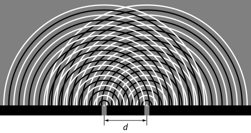
{kind=link}
Das Experiment, das niemand versteht
Elektronen sind Teilchen. Winzige Dinger mit Masse und Ladung. Sie prallen gegen Wände, sie werden von Magneten abgelenkt, man kann sie zählen, einzeln. Ein Elektron ist ein Elektron, nicht ein halbes, nicht ein diffuses Etwas. Wenn man einen Elektronendetektor hinter den Doppelspalt stellt, hört man klick. Ein Klick, ein Elektron. Nicht ein Rauschen, nicht ein Wischen. Klick.
Also: Zwei Schlitze. Elektronen einzeln abfeuern. Eins nach dem anderen. Die ersten hundert Treffer sehen zufällig aus. Aber nach Zehntausenden von Klicks formt sich ein Bild: Streifen. Hell, dunkel, hell, dunkel. Interferenz. Genau wie bei den Wasserwellen.
Halt. Stop.
Die Elektronen wurden einzeln abgefeuert. Es war immer nur ein einziges unterwegs. Mit wem soll es interferiert haben? Mit sich selbst?
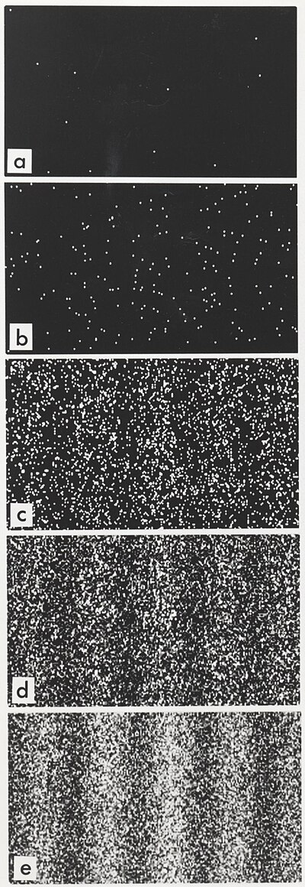
{kind=link}
Vielleicht geht jedes Elektron durch einen bestimmten Schlitz, und wir wissen nur nicht welchen? Gute Idee. Falsch. Denn wenn man einen Detektor an die Schlitze baut, der feststellt, durch welchen Schlitz das Elektron gegangen ist – dann verschwindet das Interferenzmuster. Sofort. Vollständig.
Das Elektron scheint zu wissen, ob man hinschaut. An dieser Stelle steigen die meisten populärwissenschaftlichen Darstellungen in Philosophie ein. Bewusstsein des Beobachters, kollabierende Wellenfunktionen, Katzen in Kisten. Das ist alles entweder falsch oder zumindest nicht hilfreich. Was stattdessen hilft, ist ein Pfeil.
Der Pfeil, der alles erklärt
Vergiss für einen Moment alles, was du über Quantenmechanik gehört hast. Wir fangen bei Null an. Und das Einzige, was wir brauchen, ist ein kleiner Pfeil.
Stell dir eine Uhr vor. Eine analoge, mit Zeiger. Dieser Zeiger dreht sich, gleichmäßig, im Kreis. Er hat eine bestimmte Länge und zeigt zu jedem Zeitpunkt in eine bestimmte Richtung. Das ist alles. Länge und Richtung.
In der Quantenmechanik bekommt jeder Vorgang, den ein Teilchen ausführen kann – „fliege von hier nach dort“ – einen solchen Pfeil zugeordnet. Nicht eine Wahrscheinlichkeit, nicht Ja oder Nein, sondern einen Pfeil mit Länge und Richtung. Die Physiker nennen diesen Pfeil eine Amplitude. Und es gibt genau eine Regel, um daraus eine Wahrscheinlichkeit zu machen: Nimm die Länge des Pfeils und quadriere sie. Ein Pfeil der Länge 0,3 ergibt eine Wahrscheinlichkeit von 0,09. Ein Pfeil der Länge 0,5 ergibt 0,25. So einfach ist das.
Aber die Magie steckt nicht im Quadrieren. Die Magie steckt darin, was passiert, wenn es mehrere Möglichkeiten gibt.
Pfeile addieren – und plötzlich ist alles anders
Zurück zum Doppelspalt. Ein Elektron fliegt von der Quelle zum Detektor. Es gibt zwei Wege: durch den linken Schlitz oder durch den rechten. Jeder Weg hat seinen eigenen Pfeil.
Jetzt kommt die Regel, die alles verändert: Wenn es mehrere Möglichkeiten gibt, die zum selben Ergebnis führen, dann addierst du die Pfeile. Nicht die Wahrscheinlichkeiten – die Pfeile. Lege sie hintereinander, Spitze an Ende. Der resultierende Pfeil – das ist dein Ergebnis. Dann quadrierst du seine Länge.
Wenn die beiden Pfeile in ungefähr dieselbe Richtung zeigen: langer Gesamtpfeil, große Wahrscheinlichkeit. Heller Streifen. Wenn sie in entgegengesetzte Richtungen zeigen: kurzer Gesamtpfeil, keine Wahrscheinlichkeit. Dunkler Streifen.
Das ist Interferenz. Nicht von Wellen im Raum, nicht von mysteriösen Überlagerungen – sondern von Pfeilen, die sich addieren.
Und woher weiß der Pfeil, in welche Richtung er zeigen soll? Das hängt vom Weg ab. Ein längerer Weg dreht den Pfeil weiter als ein kürzerer. Genauer: Der Pfeil dreht sich proportional zur Länge des Weges. Wenn der Weg durch den linken Schlitz exakt eine halbe Drehung mehr ergibt als der Weg durch den rechten Schlitz, dann zeigen die beiden Pfeile in entgegengesetzte Richtungen. Auslöschung. Dunkelheit. Wenn der Wegunterschied eine ganze Drehung ergibt, zeigen beide Pfeile wieder in dieselbe Richtung. Verstärkung. Helligkeit. Hell, dunkel, hell, dunkel – das Interferenzmuster fällt aus den Pfeilen heraus wie ein Abziehbild.
Warum Hinschauen alles zerstört
Wenn du einen Detektor aufstellst, der feststellt, durch welchen Schlitz das Elektron gegangen ist, dann gibt es keine Alternativen mehr. In jedem einzelnen Fall gibt es nur einen Pfeil, nicht zwei, die man addieren könnte.
Kein Addieren von Pfeilen, keine Interferenz. Das Elektron „weiß“ nicht, ob du hinschaust. Es ist keine Mystik. Es ist Buchhaltung. Wenn zwei Wege ununterscheidbar sind, addierst du die Pfeile. Wenn du sie unterscheidbar machst, gibt es nur einen Pfeil pro Durchgang. Die Addition entfällt. Die Interferenz verschwindet.
Was du jetzt in der Hand hast: Wir haben kein einziges Integral geschrieben, keine komplexen Zahlen benutzt. Wir haben nur gesagt: Jeder Weg hat einen Pfeil. Mehrere Wege zum selben Ziel? Pfeile addieren. Dann quadrieren. Und daraus ist die gesamte Interferenzphysik herausgefallen.
Diese Pfeile – diese Amplituden – sind der eigentliche Kern der Quantenmechanik. Nicht die Wellenfunktion (die ist nur eine bestimmte Darstellung der Pfeile). Nicht die Schrödingergleichung (die beschreibt nur, wie sich die Pfeile mit der Zeit drehen). Die Pfeile sind das Fundament.
Probier es selbst
Du siehst das Doppelspalt-Experiment als interaktive Grafik. Verschiebe den gelben Punkt am Schirm, um verschiedene Detektorpositionen zu testen. Dreh an den Reglern für Spaltabstand und Wellenlänge. Und dann: Schalte den Detektor ein und beobachte, wie das Interferenzmuster verschwindet.
Was du gerade gesehen hast: Zwei Wege, zwei Pfeile, eine Addition. Wenn die Pfeile in dieselbe Richtung zeigen (blau und lila fast parallel), verstärken sie sich – heller Streifen. Wenn sie gegeneinander zeigen, löschen sie sich aus – dunkler Streifen. Schaltest du den Detektor ein, gibt es pro Durchgang nur noch einen Pfeil. Keine Addition, keine Interferenz.
Aber denk mal weiter. Was passiert, wenn man nicht zwei Schlitze in die Wand schneidet, sondern drei? Dann gibt es drei Wege, drei Pfeile. Fünf Schlitze? Fünf Pfeile. Und wenn es gar keine Wand gibt – wie viele Wege gibt es dann? Unendlich viele. Der gerade Weg. Der Weg, der einen kleinen Bogen macht. Der Weg, der erst zum Mond fliegt und zurückkommt. Den Spaghetti-Knäuel-Weg. Jeder dieser Wege hat einen Pfeil. Und die Quantenmechanik sagt: Addiere sie alle.
Das klingt verrückt. Das klingt, als wäre es unmöglich auszurechnen. Und es klingt, als wäre das Ergebnis ein heilloses Durcheinander.
Aber das Gegenteil ist der Fall. Aus diesem scheinbaren Chaos fällt Ordnung heraus – und zwar genau die Ordnung, die wir im Alltag beobachten. Ein geworfener Ball folgt einer Parabel. Ein Planet umkreist die Sonne auf einer Ellipse. Newtons Gesetze. Die klassische Physik. Sie alle verstecken sich in der Summe über unendlich viele Pfeile.
Wie das funktioniert, klären wir jetzt.
Kapitel 2
Zwei Regeln, die die ganze Quantenwelt erzeugen
In Kapitel 1 haben wir ein Elektron durch zwei Spalte geschickt. Jeder Spalt gab dem Elektron einen Pfeil. Die zwei Pfeile wurden addiert: hintereinander legen, Gesamtpfeil messen, quadrieren – fertig war die Wahrscheinlichkeit. Daraus fiel das gesamte Interferenzmuster heraus. Am Ende stand die Frage: Wenn ein Elektron „beide Spalte gleichzeitig nimmt“ – nimmt es vielleicht alle denkbaren Wege gleichzeitig?
Die Antwort ist ja. Und der Weg dorthin führt über zwei Regeln, die so einfach sind, dass sie auf eine Serviette passen – und so mächtig, dass die gesamte Quantenmechanik aus ihnen folgt.
Die Regeln
Richard Feynman hat die Quantenmechanik auf zwei Vorschriften reduziert. Nicht auf zwei Gleichungen – auf zwei Anweisungen, was man mit Pfeilen tun soll.
Regel 1 – Alternativen: Addiere die Pfeile.
Wenn ein Teilchen auf mehreren Wegen von A nach B kommen kann, und du nicht weißt (und prinzipiell nicht feststellen kannst), welchen Weg es genommen hat – dann bekommt jeder Weg einen Pfeil, und du legst sie hintereinander. Der Gesamtpfeil bestimmt die Wahrscheinlichkeit.
Regel 2 – Nacheinander: Multipliziere die Pfeile.
Wenn ein Teilchen erst von A nach B geht und dann von B nach C, dann bekommt jeder Teilschritt einen Pfeil. Die Pfeile werden multipliziert: Die Längen werden mal genommen, und die Winkel werden addiert.
Das war’s. Zwei Regeln. Kein Wenn und Aber.
Was „Multiplizieren“ bedeutet
Multiplizieren von Pfeilen klingt abstrakt, ist aber genauso anschaulich wie das Addieren aus Kapitel 1.
Addieren hieß: Spitze an Ende legen. Der Gesamtpfeil geht vom Anfang des ersten zum Ende des letzten.
Multiplizieren heißt: Längen mal nehmen, Winkel zusammenzählen. Wenn der erste Pfeil Länge 0,8 hat und um 30° gedreht ist, und der zweite Länge 0,5 hat und um 45° gedreht ist, dann hat das Produkt die Länge 0,4 und ist um 75° gedreht.
Dieselbe Buchhaltung, andere Währung
Vielleicht fragst du dich: Warum Pfeile? Warum nicht einfach Wahrscheinlichkeiten, wie in der normalen Physik? Die Antwort ist der Schlüssel zu allem, was folgt. Und am besten sieht man sie an einem konkreten Beispiel.
Der klassische Entscheidungsbaum. Stell dir vor, Elektronen wären Gewehrkugeln. Eine Kugel fliegt auf die Wand mit zwei Spalten. Sie geht mit 50% Wahrscheinlichkeit durch den linken Spalt und mit 50% durch den rechten. Hinter jedem Spalt wird sie abgelenkt – sagen wir, mit 30% Wahrscheinlichkeit geradeaus und mit 20% leicht nach links. Wie groß ist die Wahrscheinlichkeit, dass die Kugel an einer bestimmten Stelle auf dem Schirm ankommt?
Nacheinander → multiplizieren: Die Wahrscheinlichkeit für „linker Spalt, dann geradeaus“ ist \(0{,}5 \times 0{,}3 = 0{,}15\).
Nacheinander → multiplizieren: Die Wahrscheinlichkeit für „rechter Spalt, dann geradeaus“ ist ebenfalls \(0{,}5 \times 0{,}3 = 0{,}15\).
Alternativen → addieren: Beide Wege führen zur selben Stelle, also \(0{,}15 + 0{,}15 = 0{,}30\).
Soweit, so vertraut. Genau so funktioniert jeder Entscheidungsbaum, den du aus Schule oder Studium kennst. Und das Ergebnis ist vorhersagbar: Wahrscheinlichkeiten sind immer positiv. Wenn du zwei positive Zahlen addierst, wird das Ergebnis immer größer. Mehr Wege bedeuten mehr Wahrscheinlichkeit. Kein Weg kann einen anderen „auslöschen“. Das Muster auf dem Schirm: zwei breite Buckel, einer hinter jedem Spalt. Keine Streifen. Keine Überraschungen.
Der Quanten-Entscheidungsbaum. Jetzt dasselbe mit Pfeilen. Exakt dieselben Regeln – multipliziere für Nacheinander, addiere für Alternativen. Aber statt der Zahl 0,5 hat jeder Spalt einen Pfeil der Länge 0,5, der in eine bestimmte Richtung zeigt. Und statt 0,3 hat der nächste Schritt einen Pfeil der Länge 0,3 mit einem anderen Winkel.
Nacheinander → multiplizieren: Längen mal nehmen, Winkel addieren. Das Ergebnis für den Weg über den linken Spalt ist ein Pfeil der Länge 0,15 – so weit identisch. Genauso für den rechten Spalt: auch ein Pfeil der Länge 0,15.
Aber jetzt: Alternativen → addieren. Und hier passiert etwas, das mit Wahrscheinlichkeiten unmöglich ist. Die beiden Pfeile haben verschiedene Richtungen – weil die Wege durch die verschiedenen Spalte verschiedene Längen haben und der Pfeil sich unterwegs weitergedreht hat. Wenn die beiden Pfeile in ähnliche Richtungen zeigen: großer Gesamtpfeil. Heller Streifen. Wenn sie in entgegengesetzte Richtungen zeigen: die Pfeile heben sich auf. Gesamtpfeil fast null. Dunkler Streifen.
Mehr Wege können weniger Wahrscheinlichkeit bedeuten. Das ist der Satz, der die gesamte Quantenmechanik von der gesamten klassischen Physik trennt. Und er folgt nicht aus einer neuen Regel – die Regeln sind identisch. Er folgt daraus, dass die Natur nicht mit Zahlen rechnet, sondern mit Pfeilen.
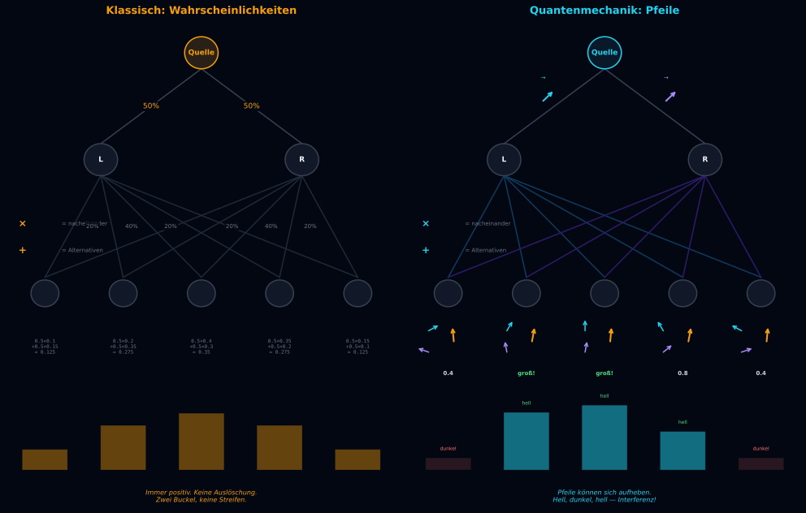
Der Unterschied in einem Satz: In der klassischen Physik rechnet man mit Wahrscheinlichkeiten (positive Zahlen, die sich nie auslöschen). In der Quantenmechanik rechnet man mit Amplituden (Pfeile, die sich gegenseitig aufheben können). Die Buchhaltungsregeln sind dieselben. Nur die Währung ist anders.
Der Doppelspalt als Spezialfall
Ein Elektron fliegt von der Quelle A durch eine Wand mit zwei Spalten zum Detektor C. Es gibt zwei Möglichkeiten: durch den linken Spalt (B₁) oder durch den rechten (B₂). Du weißt nicht welchen Weg → Regel 1: addiere. Jeder Weg besteht aus zwei Schritten → Regel 2: multipliziere.
Genau das haben wir in Kapitel 1 gemacht – wir haben es nur nicht so genannt.
Von Spalten zu Wegen
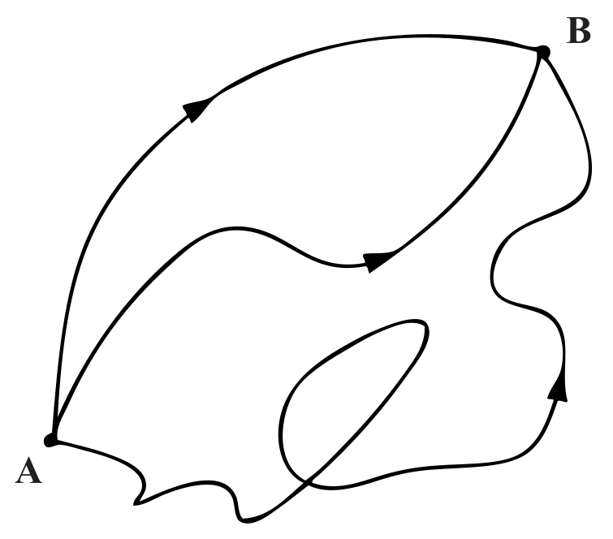
{kind=link}
Was, wenn die Wand drei Spalte hat? Dann gibt es drei Alternativen. Regel 1 sagt: Addiere alle drei. Hundert Spalte? Hundert Terme in der Summe. Und wenn du die Spalte immer enger und immer zahlreicher machst? Irgendwann hast du so viele Spalte, dass die Wand praktisch nicht mehr da ist – sie besteht nur noch aus Löchern. In der Grenze: Du nimmst die Wand ganz weg. Dann gibt es an jeder Position einen „Spalt“ – und die Summe läuft über alle möglichen Zwischenpositionen.
Jetzt schieb nicht eine, sondern zwei Zwischenwände ein. Jeder Weg geht dann: A → irgendein Spalt Bⱼ in Wand 1 → irgendein Spalt Dₖ in Wand 2 → C. Drei Etappen hintereinander (Regel 2: multipliziere), viele Alternativen für die Kombination (j,k) (Regel 1: addiere):
Das sieht komplizierter aus, aber es ist nichts Neues. Dieselben zwei Regeln. Jede Kombination (j,k) ist ein kleiner Zickzack-Weg. Nur angewendet auf mehr Schritte.
Der Propagator
Physiker nennen den Pfeil für den Übergang von A nach B den Propagator, geschrieben \(K(B,A)\). Die zentrale Gleichung für eine Zwischenwand lautet:
Sie sagt: Um die Amplitude von A nach C zu berechnen, nimm jeden möglichen Zwischenpunkt B, berechne die Amplitude in zwei Schritten, multipliziere (Regel 2), und addiere über alle B (Regel 1).
Was, wenn du unendlich viele Zwischenschritte einfügst – einen für jeden Zeitpunkt? Dann wird jede Kombination von Zwischenpositionen zu einem Weg – einer durchgehenden Kurve von A nach C. Die Summe über alle Kombinationen wird zur Summe über alle möglichen Wege.
Und das Produkt der vielen kleinen Pfeile entlang eines Weges wird zu einem einzigen Pfeil für den gesamten Weg. Dessen Winkel hängt von einer Zahl ab, die einen eigenen Namen hat: die Wirkung.
Probier es selbst
Die Visualisierung zeigt ein Teilchen, das von A (links) nach C (rechts) fliegt. Dazwischen stehen Wände mit Spalten. Erhöhe die Anzahl der Zwischenwände von 1 auf 5, auf 20. Beobachte, wie aus diskreten Spalten kontinuierliche Pfade werden – und wie die Pfeiladdition rechts das Ergebnis formt.
Was du gerade gesehen hast: Der Übergang von „Spalte“ zu „Wege“ ist kein neues Prinzip. Es sind immer noch dieselben zwei Regeln – konsequent angewendet. Bei einer Wand mit zwei Spalten: zwei Terme. Bei hundert Spalten: hundert Terme. Bei zwanzig Wänden sehen die Zickzack-Wege schon fast wie glatte Kurven aus.
Wir wissen jetzt: Die Amplitude, von A nach C zu kommen, ist die Summe über alle Wege. Jeder Weg trägt einen Pfeil bei. Aber drei Fragen sind offen: Wir haben noch nicht gesagt, was die Wirkung eines Weges konkret ist. Wir wissen nicht, warum manche Pfeile sich verstärken und andere sich auslöschen. Und wir wissen nicht, warum ein geworfener Ball trotz unendlich vieler möglicher Wege immer einer Parabel folgt.
All das klärt sich, wenn wir die Wirkung verstehen.
Kapitel 3
Wie ein Integral aus Unendlich entsteht
In Kapitel 1 hast du gelernt: Jeder Weg bekommt einen Pfeil. Pfeile, die in dieselbe Richtung zeigen, verstärken sich. Pfeile, die gegeneinander zeigen, löschen sich aus. In Kapitel 2 hast du entdeckt: Es gibt nur zwei Regeln (Alternativen → addiere, Nacheinander → multipliziere), und wie aus Spalten Wege werden. Am Ende stand die Erkenntnis: Die Amplitude \(K(B,A)\) ist eine Summe über alle möglichen Wege.
Aber wir haben den entscheidenden Schritt aufgeschoben: Was bestimmt den Pfeil eines Weges? Warum hat ein gerader Weg einen anderen Pfeil als ein krummer? Und warum fliegt ein Ball trotz unendlich vieler möglicher Wege immer auf einer Parabel? Heute klären wir das – und dabei werden wir nebenbei herausfinden, warum Newtons Gesetze gelten.
Multiplikation bedeutet Winkeladdition
Erinnere dich an Regel 2: Wenn etwas nacheinander geschieht, multiplizierst du die Pfeile. Stell dir einen Weg vor, der in zwanzig kleine Schritte zerlegt ist. Jeder Schritt hat seinen eigenen kleinen Pfeil – mit einer kleinen Drehung. Das Produkt aller zwanzig Pfeile ist ein einziger Pfeil, dessen Winkel die Summe aller zwanzig kleinen Winkel ist:
Die Wirkung
Die Summe aller kleinen Winkel entlang eines Weges heißt \(S/\hbar\) – die Wirkung \(S\) des Weges, geteilt durch die Planck-Konstante \(\hbar\). Was bestimmt den kleinen Winkel bei jedem Schritt?
Die Größe in der Klammer – kinetische Energie minus potentielle Energie – heißt die Lagrange-Funktion \(L\). Und die Wirkung \(S\) ist die Summe von \(L\) über alle Zeitschritte:
Denk nicht an Schulmathematik. Denk an das, was es bedeutet: Du gehst den Weg von Anfang bis Ende ab, merkst dir bei jedem Schritt die Differenz „kinetisch minus potentiell“, und addierst alles auf. Das Ergebnis ist die Wirkung. Die Wirkung bestimmt den Winkel des Pfeils.
Warum Minus und nicht Plus?
Halt. Kinetische Energie minus potentielle Energie? Nicht plus? Das ist keine willkürliche Konvention. Es ist der Kern der ganzen Sache.
Überleg dir, was passieren würde, wenn wir Plus nehmen würden. \(\text{KE} + \text{PE}\) ist die Gesamtenergie – und die ist erhalten. Für einen Ball, der von A nach B fliegt, ist die Gesamtenergie auf jedem Weg dieselbe (gleiche Startgeschwindigkeit, gleiche Endposition, gleiche Reisezeit). Das Integral von \((\text{KE} + \text{PE})\) über die Zeit ergibt schlicht \(E \times T\) – eine Konstante. Dieselbe Zahl für den geraden Weg wie für den verrückten Weg. Eine Größe, die auf jedem Weg gleich ist, kann nicht erklären, warum die Natur einen bestimmten Weg bevorzugt.
Die Differenz \(\text{KE} - \text{PE}\) ist anders. Sie ist auf jedem Weg verschieden, auch wenn die Summe konstant bleibt. Stell dir einen Ball vor, den du senkrecht nach oben wirfst. Am Anfang ist er schnell (viel KE, wenig PE) – \(L\) ist positiv. Am höchsten Punkt steht er still (null KE, viel PE) – \(L\) ist stark negativ. Auf dem Rückweg wird \(L\) wieder positiv. Die Wirkung \(S = \int L\,dt\) erfasst diesen gesamten Rhythmus: wann der Ball schnell ist und wann er hoch ist. Ein anderer Weg – sagen wir, der Ball schwebt länger oben – hätte einen anderen Rhythmus und eine andere Wirkung. Der klassische Weg (die Parabel) ist derjenige, bei dem die Wirkung stationär ist.
Feynman würde sagen: Die Frage „Warum Minus?“ beantwortet letztlich die Quantenmechanik selbst. Die Wirkung ist die Zahl, deren Pfeil – \(e^{iS/\hbar}\) – über alle Wege aufsummiert die richtige Physik ergibt. Dass darin \(\text{KE} - \text{PE}\) steht und nicht irgendeine andere Kombination, ist die einzige Wahl, die funktioniert. Das Minus ist kein Zufall. Es ist der Grund, warum die Pfeiladdition die Welt beschreibt.
Warum \(F = ma\) einen tieferen Grund hat
In der Schule hast du gelernt: Kraft gleich Masse mal Beschleunigung. \(F = ma\). Newton hat das 1687 aufgeschrieben, und es funktioniert fantastisch. Aber Newton konnte nicht erklären, warum es funktioniert. Er hat nur festgestellt, dass es funktioniert.
Die Wirkung liefert den tieferen Grund. Die Aussage „ein Ball fliegt auf einer Parabel“ ist äquivalent zur Aussage „der Ball nimmt den Weg, bei dem die Wirkung stationär ist“ – wo kleine Abweichungen die Wirkung kaum ändern. Das klingt nach einer mathematischen Spielerei. Aber gleich wirst du sehen, dass es exakt das ist, was die Quantenmechanik vorhersagt – als direkte Konsequenz der Pfeiladdition.
Die stationäre Phase – das Herzstück
Wege weit weg vom klassischen Pfad: Hier ändert sich die Wirkung \(S\) schnell bei kleinen Variationen. Benachbarte Wege haben sehr verschiedene Winkel. Ihre Pfeile zeigen in alle möglichen Richtungen. In der Summe heben sie sich auf. Destruktive Interferenz.
Wege nahe am klassischen Pfad: Hier ist \(S\) stationär – kleine Abweichungen ändern die Wirkung kaum. Benachbarte Wege haben fast den gleichen Winkel. Ihre Pfeile verstärken sich. Konstruktive Interferenz.
Der klassische Weg – die Parabel, die gerade Linie, was auch immer Newton vorhersagt – ist nicht deshalb besonders, weil die Natur ihn „auswählt“. Er ist besonders, weil er der einzige ist, bei dem sich die Nachbarwege nicht gegenseitig auslöschen. Newtons \(F = ma\) ist nicht fundamental. Es ist das, was übrig bleibt, wenn sich die Pfeile der verrückten Wege gegenseitig zerstört haben.
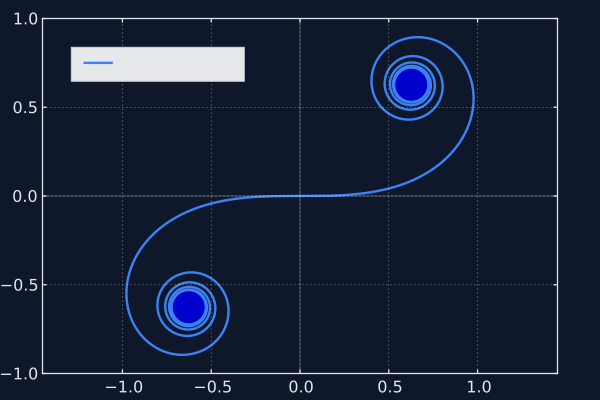
{kind=link}
Die Rolle von \(\hbar\)
Der Winkel eines Pfeils ist \(S/\hbar\). Je kleiner \(\hbar\), desto mehr dreht sich der Pfeil für eine gegebene Wirkung – und desto schneller löschen sich Wege aus, die nicht genau auf dem klassischen Pfad liegen.
Für einen geworfenen Ball ist \(\hbar \approx 10^{-34}\) Joulesekunden winzig im Vergleich zur Wirkung der Flugbahn. Schon ein Weg, der nur einen Bruchteil eines Millimeters von der Parabel abweicht, löscht sich mit seinen Nachbarn aus. Deshalb sieht der Ball aus, als folge er einem einzigen Weg.
Für ein Elektron ist \(\hbar\) nicht klein im Vergleich zu den relevanten Wirkungen. Viele Wege tragen bei. Deshalb zeigt das Elektron Interferenz. Der Unterschied zwischen Quanten- und klassischer Welt ist kein Prinzipienunterschied. Es ist ein Skalenunterschied.
Die Zahlen, die alles klären
Das klingt abstrakt. Machen wir es konkret.
Ein Tennisball (57 Gramm, 20 m/s, 1 Sekunde Flugzeit). Die Wirkung für den geraden Weg ist \(S = \tfrac{1}{2}mv^2 t = 11{,}4\) Joulesekunden. Geteilt durch \(\hbar\): Der Pfeil dreht sich während des Fluges \(1{,}7 \times 10^{34}\) mal im Kreis. Siebzehn Milliarden Milliarden Milliarden Milliarden volle Umdrehungen.
Was passiert, wenn der Ball nur ein Millionstel eines Millimeters vom geraden Weg abweicht? Die Wirkung ändert sich so stark, dass der Pfeil \(1{,}7 \times 10^{20}\) zusätzliche Umdrehungen macht – hundert Milliarden Milliarden Extra-Drehungen. Der Pfeil dieses Nachbarweges zeigt in eine völlig andere Richtung als der Pfeil des klassischen Weges. Auslöschung. Der „Quanten-Korridor“ – der Bereich, in dem die Pfeile noch in ähnliche Richtungen zeigen – ist 0,03 Femtometer breit. Das ist ein Dreißigstel eines Protonradius. Der Tennisball „spürt“ nur den klassischen Weg.
Ein Elektron im Doppelspalt (50 Elektronenvolt, Spaltabstand 100 Nanometer). Die Wirkung ist \(S \approx 1{,}9 \times 10^{-24}\) Joulesekunden – der Pfeil macht „nur“ \(2{,}9 \times 10^{9}\) Umdrehungen. Immer noch Milliarden, aber \(10^{25}\)-mal weniger als beim Tennisball. Und der Quanten-Korridor? 3,7 Mikrometer breit – vierzig Mal breiter als der Spaltabstand. Der Pfad des Elektrons kann bequem beide Spalte „erkunden“. Deshalb interferiert es.
An der ersten hellen Stelle auf dem Schirm unterscheiden sich die Wege durch die beiden Spalte um exakt eine volle Pfeildrehung (\(2\pi\)) – die Pfeile zeigen in dieselbe Richtung, Verstärkung. An der ersten dunklen Stelle: exakt eine halbe Drehung (\(\pi\)) Unterschied – die Pfeile zeigen in entgegengesetzte Richtungen, Auslöschung.
Die Metapher: \(\hbar\) ist die „Korngröße“ der Wirkung. Beim Tennisball besteht die Wirkung aus \(10^{34}\) Körnern – die Quantenkörnung ist völlig unsichtbar, wie einzelne Atome in einem Stahlträger. Beim Elektron sind es \(10^{9}\) Körner – der Pfad kann mikrometerbreit wackeln, bevor die Körnung auffällt. Dieses Wackeln reicht aus, um durch beide Spalte zu gehen.
Probier es selbst – Teil A: Wirkung und Phase
Die erste Visualisierung hat zwei Tabs. In Tab 1 siehst du einen einzelnen Weg, zerlegt in Schritte. Verschiebe den α-Regler, um den Weg zu verbiegen, und beobachte, wie sich die Wirkung ändert. In Tab 2 siehst du 121 Wege gleichzeitig: Beobachte die Cornu-Spirale rechts – in der Mitte verstärken sich die Pfeile, an den Rändern löschen sie sich aus. Dreh am \(\hbar\)-Regler, um den Übergang von Quantenwelt zu klassischer Welt live zu sehen.
Probier es selbst – Teil B: Pfadintegral
Die zweite Visualisierung zeigt die Pfade direkt. Variiere \(\hbar\): Bei großem \(\hbar\) (Quantenwelt) tragen viele Wege bei. Bei kleinem \(\hbar\) (Alltagswelt) überlebt nur der klassische Pfad.
Was \(e^{i\theta}\) bedeutet – die Sprache der Pfeile
Bevor wir weitergehen, müssen wir über Notation reden. Seit zwei Kapiteln zeichnen wir Pfeile. Physiker zeichnen keine Pfeile – sie schreiben \(e^{i\theta}\). Und das ist kein neues Konzept. Es ist die mathematische Schreibweise für exakt das, was du schon kennst.
\(e^{i\theta}\) bedeutet: Ein Pfeil der Länge 1, gedreht um den Winkel \(\theta\). Nicht mehr, nicht weniger. Der Buchstabe \(e\) ist die Eulersche Zahl (2,718...), das \(i\) ist die imaginäre Einheit („eine Vierteldrehung“), und \(\theta\) ist der Winkel in Bogenmaß. Zusammen ergibt das einen Punkt auf dem Einheitskreis.
Hier die wichtigsten Spezialfälle:
| Winkel \(\theta\) | \(e^{i\theta}\) | Pfeil |
|---|---|---|
| \(0\) | \(1\) | → zeigt nach rechts. Keine Drehung. |
| \(\pi/2\) | \(i\) | ↑ zeigt nach oben. Vierteldrehung. |
| \(\pi\) | \(-1\) | ← zeigt nach links. Halbe Drehung. Das ist Eulers berühmte Identität: \(e^{i\pi} = -1\). |
| \(2\pi\) | \(1\) | → volle Drehung, zurück am Anfang. |
Schau dir die dritte Zeile genau an. \(e^{i\pi} = -1\) bedeutet: Ein Minuszeichen IST eine 180°-Drehung. Wenn zwei Pfeile in entgegengesetzte Richtungen zeigen, ergibt ihre Summe null – sie ergeben buchstäblich Plus und Minus, und das ist Auslöschung. Die destruktive Interferenz, die wir in Kapitel 1 am Doppelspalt gesehen haben, ist in dieser einen Gleichung enthalten.
Und das Schönste: Die Multiplikationsregel, die wir seit Kapitel 2 benutzen („Winkel addieren sich“), ist in der Exponentialschreibweise trivial:
Pfeile multiplizieren = Winkel addieren. Was wir zwei Kapitel lang als Regel formuliert haben, ist in der Notation eine einzige Zeile Algebra.
Für Neugierige
Warum beschreibt die Exponentialfunktion einen Kreis? Betrachte \(z(\theta) = e^{i\theta}\). Die Ableitung ist \(i \cdot e^{i\theta} = i \cdot z\). „Mal \(i\)“ dreht einen Pfeil um 90°. Also steht die Geschwindigkeit immer senkrecht auf der Position – und das ist die Definition von Kreisbewegung. Startpunkt \(z(0) = 1\) (rechts), Geschwindigkeit zeigt nach oben, und der Punkt läuft auf dem Einheitskreis.
Ab jetzt können wir \(e^{i\theta}\) und „Pfeil mit Winkel \(\theta\)“ synonym verwenden. Es ist dieselbe Sache – nur kürzer aufgeschrieben.
Warum ausgerechnet \(e^{iS/\hbar}\)? – Die Gleichung, die keine Wahl lässt
Jetzt, wo wir wissen, was \(e^{i\theta}\) bedeutet, können wir die entscheidende Frage stellen: Warum ist der Pfeil für einen Weg ausgerechnet \(e^{iS/\hbar}\) – also ein Pfeil mit dem Winkel „Wirkung geteilt durch \(\hbar\)“? Ist das ein Postulat? Ein Trick? Nein. Es ist die einzige Möglichkeit.
Der Grund liegt in unseren beiden Regeln – und zwar in ihrem Zusammenspiel.
Erinnere dich: Wenn ein Teilchen erst von A nach B und dann von B nach C geht, dann addieren sich die Wirkungen der beiden Teilstrecken:
Das ist reine Physik – die Wirkung ist ein Integral über die Zeit, und Integrale über aneinandergereihte Zeitabschnitte addieren sich.
Gleichzeitig sagt Regel 2: Die Pfeile der beiden Teilstrecken werden multipliziert:
Jetzt frag dich: Welche Funktion \(A(S)\) verwandelt eine Addition der Wirkungen in eine Multiplikation der Amplituden? Welche Funktion erfüllt:
Das ist eine der berühmtesten Gleichungen der Mathematik – die Funktionalgleichung der Exponentialfunktion. Und ihre Lösung ist, unter minimalen Voraussetzungen (Stetigkeit genügt), eindeutig:
für eine Konstante \(\alpha\). Es gibt keine andere stetige Funktion, die Addition in Multiplikation verwandelt. Keine. Die Exponentialfunktion hat ein Monopol.
Aber welcher Wert für \(\alpha\)? Hier kommen zwei physikalische Bedingungen ins Spiel:
Erstens: Alle Wege sollen gleichberechtigt sein – kein Weg darf von vornherein eine größere oder kleinere Amplitude haben als ein anderer. Das bedeutet: \(|A(S)| = 1\) für alle \(S\). Der Pfeil darf sich drehen, aber seine Länge darf sich nicht ändern. (Erst bei der Addition aller Pfeile entscheidet sich, welche Wege „gewinnen“.)
Damit scheidet jedes reelle \(\alpha\) aus – denn \(e^{\alpha S}\) mit reellem \(\alpha\) wächst oder fällt exponentiell. Nur ein rein imaginäres \(\alpha = i/\hbar\) hält die Länge konstant bei 1. Denn \(|e^{i\theta}| = 1\) für jedes \(\theta\).
Zweitens: Die Konstante \(\hbar\) im Nenner legt die Skala fest – sie bestimmt, wie viel Wirkung nötig ist, um den Pfeil einmal komplett im Kreis zu drehen. Sie ist keine freie Wahl der Theorie, sondern wird durch die Natur vorgegeben: \(\hbar \approx 1{,}05 \times 10^{-34}\) Joulesekunden.
Das Argument in einem Satz: Die Forderung, dass Wirkungen sich addieren, während Amplituden sich multiplizieren, zusammen mit der Forderung gleicher Pfeillaenge für alle Wege, erzwingt \(A(S) = e^{iS/\hbar}\). Die komplexe Exponentialfunktion ist kein Postulat – sie ist die einzige Funktion, die beide Regeln gleichzeitig erfüllt.
Damit ist der rotierende Pfeil keine Metapher und kein Modell. Er ist die Mathematik – und die Mathematik hatte keine andere Wahl.
Die Formel
Jetzt können wir alles in eine einzige Zeile packen. In Kapitel 2 haben wir die Amplitude als Summe über diskrete Spalte geschrieben – \(\sum_k\). Aber wir haben gesehen, dass die Spalte immer zahlreicher werden, die Wand verschwindet, und die Summe über Spalte zu einer Summe über alle möglichen Wege wird. In der Mathematik hat dieser Übergang von diskreter Summe zu kontinuierlicher Summe einen eigenen Namen: Er wird zum Integral. Physiker schreiben ihn so:
Das sieht einschüchternd aus, aber du kennst jedes Stück:
\(\int \mathcal{D}[x(t)]\) – „summiere über alle Wege“. Das \(\int\) ist das Integralzeichen (eine lang gezogene Summe), und \(\mathcal{D}[x(t)]\) sagt: jeder Weg \(x(t)\) – jede denkbare Kurve von A nach B – trägt bei. Das ist Regel 1 aus Kapitel 2: Alternativen addieren.
\(e^{iS[x(t)]/\hbar}\) – der Pfeil für diesen Weg. Länge 1, gedreht um den Winkel \(S/\hbar\). Die einzige Funktion, die Regel 2 erfüllt (Nacheinander = Winkel addieren), ohne Wege zu bevorzugen (\(|e^{i\theta}| = 1\) für jedes \(\theta\)). Und \(S[x(t)]\) ist die Wirkung dieses spezifischen Weges – \(\int(\text{KE} - \text{PE})\,dt\), entlang des Weges integriert.
Das ist Feynmans Pfadintegral. Die gesamte Quantenmechanik in einer Zeile – und jedes Stück davon ist zwingend. Nicht ausgedacht, sondern erzwungen durch die zwei Regeln aus Kapitel 2 und die Funktionalgleichung aus dem letzten Abschnitt.
Halt die Formel im Hinterkopf. In Kapitel 4 wirst du sehen, dass es zwei andere Formeln gibt, die völlig anders aussehen – aber exakt dasselbe sagen. Und die strukturelle Ähnlichkeit zwischen ihnen ist kein Zufall.
Was wir geschafft haben: In Kapitel 1 hast du Pfeile addiert. In Kapitel 2 hast du gelernt, dass es nur zwei Regeln gibt, und wie aus Spalten Wege werden. Hier hast du gesehen, wie die Wirkung entsteht und warum Newtons Gesetze eine Konsequenz der Quantenmechanik sind. Du hast gerade Physik verstanden, die Richard Feynman als Doktorand formuliert hat – und das einzige Werkzeug war ein Pfeil, der sich dreht.
Aber eine Frage ist offen. Wir haben das Pfadintegral – eine Summe über Wege. Es gibt noch zwei andere Zugänge zur Quantenmechanik, die scheinbar völlig verschieden aussehen: Energieniveaus und Fourier-Zerlegung. Die Pointe: Alle drei sagen dasselbe – in verschiedenen Sprachen. Der Einstieg in die erste dieser Sprachen kommt aus einer unerwarteten Richtung: aus der Musik.
Kapitel 4a
Jedes Signal ist eine Summe von Schwingungen
Ein Umweg über die Musik
Wenn du eine Gitarrensaite anschlägst, hörst du einen Ton. Aber kein Instrument erzeugt einen „reinen“ Ton – eine einzelne Sinuswelle. Was du hörst, ist ein Gemisch: der Grundton plus Obertöne, die mit doppelter, dreifacher, vierfacher Frequenz schwingen.
Der Grundton gibt dem Ton seine Höhe. Die Obertöne geben ihm seinen Charakter: sie entscheiden, ob du eine Gitarre hörst oder eine Flöte, obwohl beide dasselbe C spielen. Ein Equalizer am Mischpult macht genau das sichtbar. Jeder Schieberegler steht für ein Frequenzband. Dreh die hohen Frequenzen runter, und der Klang wird dumpf. Dreh sie hoch, und er wird brillant. Der Equalizer zerlegt den Klang in seine Bestandteile – und erlaubt dir, sie einzeln zu regeln.

{kind=link}
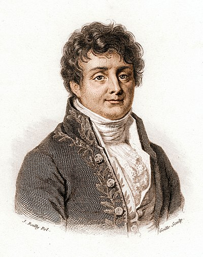
{kind=link}
1807 formulierte der französische Mathematiker Joseph Fourier eine Erkenntnis, die weit über die Musik hinausreicht:
Jedes periodische Signal – egal wie komplex – lässt sich als Summe von Sinuswellen schreiben.
Die Koeffizienten \(a_1, a_2, a_3, \ldots\) sind wie die Schieberegler eines Equalizers. Sie sagen dir, wie viel von jeder Frequenz im Signal steckt. Zwei Beschreibungen derselben Sache – wie zwei Sprachen für denselben Gedanken.
Probier es selbst
Die Visualisierung ist dein Mischpult. Sieben Schieberegler, einer für jeden Oberton. Starte mit dem Preset „Grundton“ – eine reine Schwingung. Dann wähle „≈ Rechteck“ und beobachte, wie eine eckige Welle aus wenigen Sinuswellen entsteht. Drück dann ▶ Abspielen und schau nach rechts: Dort drehen sich die Pfeile. Jeder Oberton ist ein Pfeil mit eigener Geschwindigkeit. Die Summe – der gelbe Punkt – zeichnet das Signal.
Rotierende Pfeile – schon wieder
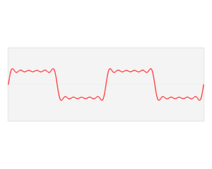
{kind=link}
Seit Kapitel 1 arbeiten wir mit Pfeilen, die sich drehen. Seit drei Kapiteln addieren wir sie und schauen, ob sie sich verstärken oder auslöschen. Und jetzt tauchen sie wieder auf – mitten in der Musiktheorie. Das ist kein Zufall. Es ist dieselbe Mathematik.
Eine Sinuswelle ist nämlich nichts anderes als ein rotierender Pfeil, von der Seite betrachtet. Stell dir einen Punkt vor, der sich gleichmäßig auf einem Kreis bewegt. Schau von der Seite auf den Kreis – also projiziere den Punkt auf die vertikale Achse. Was siehst du? Der Punkt geht hoch, kommt runter, geht hoch, kommt runter. Eine Sinuswelle. Länge des Pfeils → Amplitude der Schwingung. Drehgeschwindigkeit → Frequenz. Startwinkel → Phase. Alles, was eine Sinuswelle beschreibt, steckt in einem einzigen rotierenden Pfeil.
Und wenn ein Signal eine Summe von Sinuswellen ist, dann ist es eine Summe von rotierenden Pfeilen – Kopf an Schwanz aneinandergelegt, genau wie beim Doppelspalt in Kapitel 1. Ptolemäus beschrieb im 2. Jahrhundert Planetenbahnen mit Kreisen auf Kreisen. Fourier zerlegte 1807 Signale mit derselben Mathematik. Und wir berechnen seit Kapitel 1 Quantenamplituden auf genau diese Weise. Drei Jahrtausende, drei Kontexte, eine Struktur. Fourier-Zerlegung ist Pfeiladdition, sortiert nach Drehgeschwindigkeit.
Was das für die Quantenmechanik bedeutet
Quantensysteme haben Eigenfrequenzen – diskrete Werte, die durch das System bestimmt sind. Jede Eigenfrequenz entspricht einer bestimmten Energie \(E_n\). Und die Verbindung zwischen beiden ist verblüffend direkt.
Erinnere dich an Kapitel 3: Die Wirkung \(S\) bestimmt den Pfeilwinkel über \(S/\hbar\). Ein Eigenzustand hat eine feste Energie \(E_n\) – seine räumliche Form ändert sich nicht, das Einzige, was passiert, ist, dass der Pfeil rotiert. Welchen Winkel sammelt er in der Zeit \(T\) an? Die Wirkung ist schlicht \(S = E_n \cdot T\), also ist der Winkel \(E_n \cdot T / \hbar\). Die Drehgeschwindigkeit – der Winkel pro Zeit – ist damit:
Das ist die Eigenfrequenz. Kein neues Postulat – sie folgt direkt aus „Wirkung bestimmt den Pfeilwinkel“, angewendet auf einen Zustand mit fester Energie. Jeder Energiezustand verhält sich wie ein reiner Oberton: ein Pfeil, der sich mit konstanter Geschwindigkeit dreht. In der Musik: ein reiner Ton. In der Quantenmechanik: ein Eigenzustand.
Wie schnell drehen sich diese Pfeile? Für ein Elektron in einem 1-Nanometer-Kasten: Der langsamste Pfeil (\(n = 1\), Energie 0,38 eV) dreht sich etwa einmal alle 11 Femtosekunden. Der drittschnellste (\(n = 3\), Energie 3,39 eV) schafft fast eine volle Drehung pro Femtosekunde – neunmal schneller, weil die Energien wie \(n^2\) wachsen. Eine Femtosekunde ist ein Millionstel einer Milliardstel Sekunde. In dieser Welt drehen sich die Pfeile unvorstellbar schnell.
Vom Signal zum Propagator
Jetzt kommt der Transfer – und er ist verblüffend direkt. Drei Schritte:
Schritt 1: Der Propagator \(K(B,A,t)\) ist eine Funktion der Zeit. Wenn wir Start- und Endpunkt festhalten und nur die Zeit variieren, ist der Propagator ein Signal – genau wie der Klang einer Gitarre ein Signal ist.
Schritt 2: Fourier sagt: Jedes Signal lässt sich in reine Frequenzen zerlegen. Also lässt sich auch der Propagator in reine Frequenzen zerlegen.
Schritt 3: Die erlaubten reinen Frequenzen eines Quantensystems sind genau die Eigenfrequenzen \(\omega_n = E_n/\hbar\) – denn Frequenzen, die nicht zu einem Eigenzustand passen, löschen sich aus (wie Wellenlängen, die nicht auf eine Gitarrensaite passen, in Kapitel 4b). Was übrig bleibt, sind die Eigenzustände.
Erinnere dich an den Equalizer: Jeder Schieberegler war ein Oberton. Jetzt ersetze „Oberton“ durch „Energieniveau“. Die „Lautstärke“ jedes Obertons – wie laut er im Signal mitschwingt – hängt davon ab, wie gut der Eigenzustand am Start- und Endpunkt „lebt“. Das führt zur Formel:
Lies das langsam. Jedes Symbol hat eine Bedeutung, die du schon kennst:
\(\sum_n\) – summiere über alle Eigenzustände (alle „Obertöne“ des Systems).
\(\phi_n(B)\) – die räumliche Form des \(n\)-ten Eigenzustands, ausgewertet am Zielort \(B\). Stell dir die Gitarrensaite vor: \(\phi_1\) ist ein großer Bogen, \(\phi_2\) hat zwei Bögen mit einem Knoten in der Mitte, \(\phi_3\) hat drei Bögen. Wo \(\phi_n(B)\) groß ist, „lebt“ der Eigenzustand stark am Punkt \(B\). Wo \(\phi_n(B)\) null ist, ist \(B\) ein Knoten – der Eigenzustand liefert dort keinen Beitrag.
\(\phi_n^*(A)\) – dieselbe Form, ausgewertet am Startort \(A\), aber mit gespiegeltem Pfeil (das Sternchen). Das Spiegeln taucht auf, weil das Teilchen von \(A\) losgeht – und „losgehen“ ist das Gegenstück von „ankommen“. Das Gegenstück eines Pfeils ist sein Spiegelbild an der waagerechten Achse.
\(e^{-iE_n t/\hbar}\) – ein Pfeil der Länge 1, der sich mit Frequenz \(E_n/\hbar\) dreht. Genau wie die Obertöne in der Fourier-Visualisierung oben. Das Minuszeichen in der Exponenten macht die Drehrichtung – eine Konvention, die sicherstellt, dass sich die Pfeile im Uhrzeigersinn drehen, wie in Feynmans Stoppuhr-Bild.
Dieselbe Größe \(K(B,A)\) – einmal als Summe über Wege (Kapitel 3), einmal als Summe über Eigenzustände (hier). Zwei Beschreibungen derselben Physik. Wie der Equalizer, der dasselbe Signal zeigt, nur in einer anderen Darstellung.
Aber eine entscheidende Frage ist offen. Die Fourier-Zerlegung zeigt uns, dass es Eigenfrequenzen gibt. Aber woher kommen sie? Was bestimmt die erlaubten Frequenzen eines Quantensystems? Warum leuchtet Wasserstoff rot und nicht blau? Warum haben Atome diskrete Energieniveaus statt eines Kontinuums? Die Antwort hat mit stehenden Wellen zu tun, mit Randbedingungen – und sie ist überraschend einfach.
Kapitel 4b
Die Töne, die ein Quantensystem gerne spielt
Am Ende von Kapitel 4a blieb die Frage: Woher kommen die Eigenfrequenzen – die bevorzugten Schwingungen eines Systems? Hier ist die Antwort.
Die Saite, die wählerisch ist
Eine Gitarrensaite ist an beiden Enden befestigt. Jede Schwingung muss an beiden Enden den Wert null haben. Stell dir vor, du versuchst, eine Welle auf die Saite zu legen, deren Wellenlänge nicht dazu passt. Du drückst die Saite in ein Muster, das am linken Ende zwar null ist, aber am rechten Ende nicht null wird – die Welle „endet“ irgendwo mitten in einem Berg oder Tal. Das geht nicht. Die Saite ist dort festgenagelt. Diese Welle kann auf dieser Saite nicht existieren.
Welche Wellen passen dann? Genau diejenigen, bei denen eine ganzzahlige Anzahl von Halbwellen zwischen die Befestigungspunkte passt. Dazwischen gibt es nichts. Nicht 1,5 Halbwellen. Nicht 2,7. Nur ganze Zahlen.
Das nennt man stehende Wellen – Wellenmuster, die nicht wandern, sondern am Ort vibrieren. Die Befestigungspunkte erzwingen die Auswahl. Diesen Auswahlmechanismus nennt man Randbedingung. Stell dir ein Seil vor, das du zwischen zwei Türklinken gespannt hast. Wenn du mit der richtigen Frequenz schüttelst, baut sich ein stabiles Muster auf – die stehende Welle. Bei einer falschen Frequenz entstehen chaotische Reflexionen, die sich gegenseitig auslöschen. Das System filtert selbst – nur die passenden Frequenzen überleben.
Probier es selbst
Der Schieberegler lässt dich \(n\) stufenlos von 0,3 bis 7,5 durchstimmen. Bei ganzzahligem \(n\) wird die Welle grün – sie erfüllt die Randbedingung. Bei jedem anderen Wert wird sie rot: am rechten Rand steht „≠ 0“. Drücke ▶ Schwingung, um die stehende Welle vibrieren zu sehen. Wechsle zu ⚛ Quantenteilchen und beachte die Energieleiter rechts: Die Abstände werden immer größer.
Von der Saite zum Atom
Louis de Broglie schlug 1924 vor: Nicht nur Licht ist eine Welle – auch Materie. Ein Teilchen mit Impuls \(p\) hat eine Wellenlänge \(\lambda = h/p\). Wenn du ein Teilchen in einen Kasten sperrst – zwischen zwei undurchdringliche Wände – dann muss seine Welle in den Kasten passen. Exakt wie die Gitarrensaite.
Die Rechnung ist drei Zeilen lang – und das Ergebnis überraschend elegant. Die \(n\)-te Mode hat eine Wellenlänge von \(\lambda_n = 2L/n\) (weil genau \(n\) Halbwellen hineinpassen müssen). Der Impuls ist also \(p_n = h/\lambda_n = nh/(2L)\). Und die kinetische Energie:
Wir haben nirgends ein Postulat eingeführt, das sagt: „Energie muss diskret sein.“ Wir haben nur gesagt: Das Teilchen ist eine Welle, und die Welle muss in den Kasten passen. Die Diskretheit entsteht von allein. Sie wird nicht hineingesteckt – sie kommt heraus.
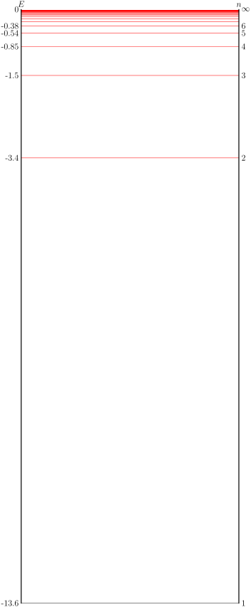
{kind=link}
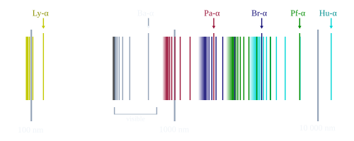
{kind=link}
Vom Kasten zum Wasserstoffatom
Der „Teilchen im Kasten“ ist das einfachste Quantensystem. Aber das Prinzip reicht viel weiter. Ein Elektron in einem Wasserstoffatom ist nicht zwischen zwei Wänden eingesperrt, sondern in der elektrischen Anziehungskraft des Protons gefangen. Das Potential hat eine andere Form – es geht wie \(-1/r\), wird also immer tiefer, je näher das Elektron dem Kern kommt. Aber die Logik ist identisch: Die Welle des Elektrons muss „passen“. Sie muss weit weg vom Kern auf null abfallen, statt ins Unendliche zu wachsen. Und diese Randbedingung wählt wieder ein diskretes Spektrum aus:
Das Minuszeichen sagt: Das Elektron ist gebunden. Der Faktor \(1/n^2\) kommt aus der Form des Coulomb-Potentials – anders als das \(n^2\) des Kastens, aber aus demselben Prinzip entstanden.
Wenn ein Elektron von Niveau \(n = 3\) auf \(n = 2\) fällt, gibt es die Energiedifferenz als Licht ab. Für diesen Übergang ergibt sich rotes Licht mit einer Wellenlänge von 656 Nanometern – die berühmte H-alpha-Linie, die Astronomen in den Spektren ferner Galaxien sehen. Für \(4 \to 2\) kommt türkises Licht heraus, für \(5 \to 2\) violettes. Das sind die Balmer-Linien, die Johann Balmer 1885 empirisch katalogisiert hat – dreißig Jahre bevor irgendjemand wusste, warum sie existieren.
Jetzt weißt du warum. Das Elektron ist eine Welle. Die Welle muss in das Atom passen. Nur bestimmte Muster passen. Jedes Muster hat eine Energie. Übergänge zwischen Mustern erzeugen Licht mit diskreten Frequenzen. Das ist das ganze Geheimnis der Spektrallinien.
Die Nullstellen, die nicht sein dürften
Bei \(n = 2\) hat die Aufenthaltswahrscheinlichkeit genau in der Mitte eine Nullstelle. Das Teilchen kann links sein oder rechts – aber es ist niemals in der Mitte. Wie kommt es dann von einer Seite auf die andere?
Die Frage setzt voraus, dass das Teilchen ein kleiner Ball ist. Aber das tut es nicht. Es ist die Welle. Die ganze Welle, gleichzeitig. Erst wenn du nachmisst, findest du es an einem konkreten Ort. Zwischen den Messungen hat die Frage „Wo ist es?“ keine scharfe Antwort.
Und noch etwas: Das Schwingen eines Eigenzustands ist nur eine Phasendrehung – der Pfeil rotiert, aber seine Länge bleibt gleich. Und \(|\psi|^2\) hängt nur von der Länge ab, nicht vom Winkel. Deshalb ändert sich die Wahrscheinlichkeitsverteilung eines Eigenzustands nicht mit der Zeit, obwohl die Wellenfunktion schwingt. Eigenzustände sind stationär: ihre beobachtbaren Eigenschaften ändern sich nicht.
Das Wort „Quantum“
Max Planck führte den Begriff 1900 ein, als er entdeckte, dass Lichtenergie nur in Paketen der Größe \(E = h\nu\) ausgetauscht wird. Fünfundzwanzig Jahre später erklärte die Wellenmechanik, warum Energie in Paketen kommt. Nicht weil die Natur es vorschreibt, sondern weil Wellen, die in begrenzten Räumen leben, nur bestimmte Muster annehmen können. Eine Gitarrensaite kann nicht jede Frequenz spielen, weil sie an beiden Enden befestigt ist. Ein Atom kann nicht jede Energie haben, weil das Elektron im Potential des Kerns gefangen ist. Der Mechanismus ist derselbe.
Kapitel 4c
Drei Sprachen, eine Physik
Der Hauptcharakter: \(K(B, A)\)
Alles dreht sich um eine einzige Größe: den Propagator \(K(B,A)\). Er beantwortet die fundamentalste Frage der Quantenmechanik: Wie groß ist die Amplitude dafür, dass ein Teilchen von Punkt A zu Punkt B gelangt? Es gibt drei völlig verschiedene Wege, diesen Pfeil zu berechnen – und alle drei liefern exakt dasselbe Ergebnis.
Sprache 1: Das Pfadintegral
Feynmans Blick. Integriere über alle möglichen Wege von A nach B. Jeder Weg trägt einen Pfeil bei, dessen Winkel die Wirkung bestimmt:
Das \(\int \mathcal{D}[x(t)]\) ist das Pfadintegral – eine Summe über alle denkbaren Kurven \(x(t)\). Keine Eigenzustände, keine Energieniveaus. Nur Wege und ihre Wirkungen. Die Struktur entsteht erst beim Aufsummieren.
Sprache 2: Die Eigenzustandszerlegung
Der Blick der Wellenmechanik. Zerlege den Propagator in stabile Muster – die „reinen Töne“ des Systems. Jeder Eigenzustand \(n\) schwingt mit seiner Eigenfrequenz \(E_n/\hbar\):
Keine Wege. Stattdessen ein Spektrum – eine Leiter von Energieniveaus. Jedes Niveau steuert einen rotierenden Pfeil bei, genau wie die Obertöne im Equalizer aus Kapitel 4a. Die gesamte Chemie wird in dieser Sprache am klarsten.
Sprache 3: Die Fourier-Transformation
Der Blick des Mathematikers. Der Propagator ist eine Funktion der Zeit. Jede Zeitfunktion lässt sich als Integral über Frequenzanteile schreiben:
Das Frequenzspektrum \(\tilde{K}(\omega)\) hat Peaks bei den Eigenfrequenzen \(\omega_n = E_n/\hbar\). Dazwischen ist es null. Die Fourier-Transformation findet die Eigenzustände, ohne dass du sie vorher kennen musst.
Siehst du es?
Schau dir die drei Formeln nochmal an. Sie sehen verschieden aus – aber sie haben dieselbe Architektur:
Pfadintegral: \(K = \displaystyle\int \mathcal{D}[x]\; e^{\,i\,S[x]\,/\,\hbar}\) — integriere über Wege, gewichtet mit \(e^{i \cdot \text{Wirkung}}\)
Eigenzustände: \(K = \displaystyle\sum_n \underbrace{\psi_n(B)\,\psi_n^*(A)}_{\text{Fourier-Koeff.}}\; e^{-i\,E_n\,t\,/\,\hbar}\) — summiere über Moden, gewichtet mit \(e^{i \cdot \text{Energie} \times \text{Zeit}}\)
Fourier: \(K = \displaystyle\int \tilde{K}(\omega)\; e^{-i\,\omega\,t}\;d\omega\) — integriere über Frequenzen, gewichtet mit \(e^{i \cdot \text{Frequenz} \times \text{Zeit}}\)
Drei Mal dasselbe Muster: Integriere (oder summiere) über alle Möglichkeiten, und gib jeder Möglichkeit einen rotierenden Pfeil \(e^{i \cdot \text{etwas}}\). Beim Pfadintegral ist das „etwas“ die Wirkung eines Weges. Bei den Eigenzuständen ist es die Energie mal Zeit. Bei Fourier ist es die Frequenz mal Zeit. Die Struktur ist identisch. Nur die Variable, über die summiert wird, unterscheidet sich: Wege, Energieniveaus oder Frequenzen.
Das ist die tiefe Erkenntnis – und sie ist kein Zufall. Sie folgt daraus, dass die Quantenmechanik linear ist: Jede Lösung lässt sich als Überlagerung anderer Lösungen schreiben. Diese Eigenschaft erzwingt, dass es verschiedene „Basen“ gibt (Wege, Eigenzustände, Frequenzen), zwischen denen man beliebig wechseln kann – wie verschiedene Koordinatensysteme für denselben Raum.
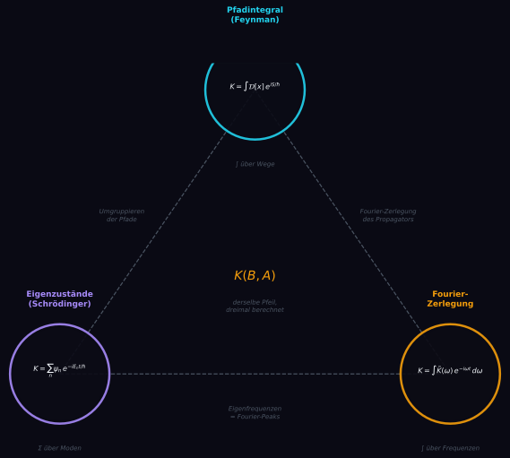
Das Dreieck
Die drei Sprachen bilden ein Dreieck. Jede Seite verbindet zwei Perspektiven:
Wege ↔ Eigenzustände: Man kann die Summe über Wege so umgruppieren, dass sie zur Summe über Eigenzustände wird. Wie ein Buch, das sowohl auf Deutsch als auch auf Französisch existiert: anderer Klang, gleicher Inhalt.
Eigenzustände ↔ Fourier: Die Eigenzustandszerlegung ist die Fourier-Zerlegung, angewandt auf das Signal „Propagator“. Mathematisch ist das buchstäblich dasselbe.
Fourier ↔ Wege: Beide sind „Summen über alles“ – nur das „alles“ unterscheidet sich: Zeitpunkte vs. Frequenzen, Wege vs. Amplituden.
Warum drei Sprachen?
Jede macht etwas sichtbar, das die anderen verbergen. Die Wegsprache macht Interferenz greifbar – du siehst, warum der klassische Weg dominiert und warum Quanteneffekte bei großen Objekten verschwinden. Aber versuch mal, mit dem Pfadintegral die Energieniveaus von Wasserstoff auszurechnen – das ist ein Alptraum.
Die Eigenzustandssprache macht Spektren greifbar – die Energieleiter, die erlaubten Übergänge, die gesamte Chemie. Aber versuch mal, damit zu erklären, warum ein Ball eine Parabel fliegt – das ist umständlich.
Die Fourier-Sprache ist die Brücke. Sie zeigt, dass Eigenzustände nichts anderes sind als Frequenzkomponenten eines Signals. Sie verbindet Quantenmechanik mit Signalverarbeitung, Akustik und Optik. Ihre Schwäche: Sie ist abstrakt. Sie sagt „es gibt Peaks im Spektrum“, aber sie erzählt keine physikalische Geschichte darüber, warum.
Die Stärke einer Sprache ist die Schwäche der anderen. Zusammen ergeben sie ein vollständiges Bild. Physiker wechseln ständig zwischen ihnen – manchmal mitten in einer Rechnung – wie ein zweisprachiger Mensch, der den Satz auf Deutsch beginnt und auf Englisch beendet, weil das treffendere Wort gerade in der anderen Sprache liegt.
Die Äquivalenz – nicht offensichtlich, aber beweisbar
Dass die drei Sprachen dasselbe sagen, ist keine Metapher. Es ist ein mathematisches Theorem. Heisenberg kam 1925 über Matrizen, Schrödinger 1926 über Wellengleichungen, Feynman 1948 über Pfadintegrale. Jeder dachte zunächst, er hätte etwas Neues entdeckt. Dann stellte sich heraus: Es war dreimal dasselbe. Die Natur hatte eine einzige Struktur, und drei Physiker hatten sie aus drei verschiedenen Richtungen gefunden – wie drei Tunnel, die sich im selben Raum treffen.
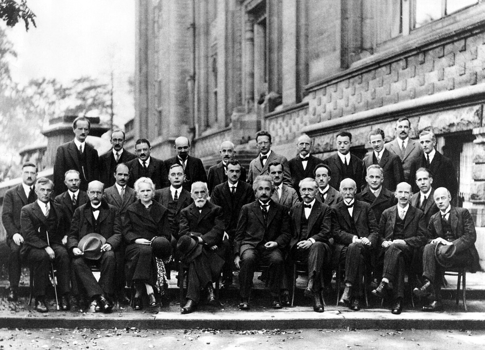
{kind=link}
Was du jetzt weißt: In Kapitel 1 hast du Pfeile addiert. In Kapitel 2 die zwei Regeln gelernt. In Kapitel 3 das Pfadintegral und die stationäre Phase verstanden. In 4a die Fourier-Zerlegung kennengelernt. In 4b gesehen, woher die Eigenzustände kommen. Und jetzt weißt du: Alle drei Perspektiven sagen dasselbe. Das ist, in groben Zügen, der Formalismus der nicht-relativistischen Quantenmechanik. Dozenten brauchen dafür ein Semester. Die Rechentechnik fehlt – aber die Denkweise ist da.
Warum hat die Quantenmechanik diese Struktur? Eine mögliche Antwort: Weil sie linear ist. Die Schrödingergleichung ist linear – wenn \(\psi_1\) und \(\psi_2\) Lösungen sind, dann ist auch \(\psi_1 + \psi_2\) eine Lösung. Linearität ist genau die Eigenschaft, die Fourier-Zerlegungen möglich macht. Und Linearität ist auch die Eigenschaft, die das Superpositionsprinzip garantiert – dass Quantenzustände überlagert werden können. Die Äquivalenz der drei Sprachen und die Superposition der Quantenmechanik sind dieselbe Tatsache, aus zwei Blickwinkeln betrachtet.
Vielleicht die tiefste Lektion der Quantenmechanik: Nicht dass Katzen gleichzeitig lebendig und tot sind. Sondern dass die Natur reicher ist als jede einzelne Beschreibung, die wir von ihr geben können.
Kapitel 4d
Von Teilchen zu Feldern – und warum man ein Teilchen nie ganz festnageln kann
Der Equalizer des Universums
In Kapitel 4a hast du ein Signal in der Zeit in Frequenzen zerlegt – wie ein Equalizer, der einen Song in Basslinien, Mitten und Höhen aufspaltet. Jetzt machen wir dasselbe, aber mit einem Feld im Raum.
Stell dir ein Feld vor, das den gesamten Raum ausfüllt – wie eine Temperaturverteilung, nur nicht mit Temperatur, sondern mit einer physikalischen Größe an jedem Punkt. Die Fourier-Zerlegung zerlegt dieses Feld in Moden: Sinuswellen verschiedener Wellenlängen. Derselbe Trick wie beim Equalizer – nur statt Schieberegler pro Frequenz jetzt Schieberegler pro Wellenlänge.
Mathematisch sieht das fast identisch aus wie in 4a:
Dasselbe \(e^{i \cdot \text{etwas}}\) wie überall in diesem Blog. Nur dass \(x\) jetzt ein Ort ist statt einer Zeit, und \(k\) eine Wellenzahl statt einer Frequenz.
Jeder Schieberegler ist eine Schaukel
Hier kommt der konzeptuelle Sprung. Jede einzelne Fourier-Mode dieses Feldes – jede Sinuswelle mit einer bestimmten Wellenlänge – verhält sich mathematisch wie ein harmonischer Oszillator. Ein Kind auf einer Schaukel. Hat eine Amplitude und eine Frequenz.
In Kapitel 4b hast du gesehen: Ein Teilchen in einem Kasten hat diskrete Energieniveaus. Der harmonische Oszillator hat auch diskrete Niveaus, aber sie sind gleichmäßig beabstandet:
Das \(n\) zählt die Anregungsstufen: \(n = 0\) (Grundzustand), \(n = 1\) (erste Anregung), \(n = 2\) (zweite), und so weiter. Jetzt die Pointe:
„Ein Feld quantisieren“ heißt: jeder Fourier-Mode diskrete Energieniveaus geben. Und die Anregungszahl \(n\) einer Mode bedeutet: „Es gibt \(n\) Teilchen mit dieser Wellenlänge.“
Die Analogie: Stell dir eine Orgel mit unendlich vielen Pfeifen vor, eine pro Wellenlänge. Jede Pfeife kann schweigen (\(n = 0\), Vakuum), leise summen (\(n = 1\), ein Teilchen), lauter (\(n = 2\), zwei Teilchen). „Ein Teilchen erzeugen“ heißt: eine Pfeife um eine Stufe aufdrehen.
Warum Teilchen entstehen und vergehen können
In den Kapiteln 1 bis 4c war die Welt so: Es gibt ein Teilchen, und es hat eine Wellenfunktion. Das Teilchen war gegeben – du konntest fragen, wo es ist oder wie schnell es sich bewegt, aber nicht, ob es existiert.
In der Quantenfeldtheorie (QFT) ist das anders. Hier ist das Feld fundamental, nicht das Teilchen. Ein „Teilchen“ ist kein eigenständiges Ding – es ist eine Anregung einer Mode. Deshalb können Teilchen erzeugt und vernichtet werden: Man zaubert keine Materie aus dem Nichts, man dreht einen Schieberegler hoch oder runter.
(Die vollständige Geschichte enthält spezielle Relativität, aber sie ändert nicht die Fourier-Struktur – sie fügt ihr einen eleganten Rahmen hinzu.)
Warum du ein Teilchen nie festnageln kannst
Jetzt kommen wir zum Kern – und hier schließt sich der Kreis zu Kapitel 4a.
Eine einzelne Fourier-Mode \(e^{ikx}\) ist eine Sinuswelle, die sich über den gesamten Raum erstreckt. Sie hat einen perfekt definierten Impuls (via de Broglie: \(p = \hbar k\)). Aber wo ist das Teilchen? Nirgends und überall – die Welle hat keine bevorzugte Position.
Erinnerst du dich an den Equalizer aus 4a? Ein reiner Ton hat keinen Anfang und kein Ende. Ein scharfes „Klick“ braucht alle Frequenzen. Genau dasselbe gilt im Raum: Eine reine Impulswelle hat keinen Ort. Ein lokalisiertes Teilchen braucht alle Wellenlängen.
Um ein „teilchenartiges“ Ding zu bauen – etwas, das ungefähr hier ist und nicht dort – musst du viele Fourier-Moden überlagern. Das Ergebnis ist ein Wellenpaket: ein lokalisierter Buckel im Raum.
Aber je mehr Moden du überlagerst, desto breiter wird die Impulsverteilung. Und umgekehrt: je weniger Moden, desto schärfer der Impuls – aber desto verschmierter das Teilchen im Raum. Es gibt keinen Ausweg.
Probier es selbst – zieh am Schieberegler und beobachte, wie Position und Impuls gegeneinander kämpfen:
Das ist die berühmte Heisenbergsche Unschärferelation:
Und hier ist der entscheidende Punkt: Das ist kein separates Postulat. Es ist kein Naturgesetz, das jemand entdeckt hätte. Es ist ein mathematisches Theorem über Fourier-Transformationen. Es gilt genauso in der Signalverarbeitung, in der Akustik, in der Funktechnik. In der Nachrichtentechnik heißt es Bandbreitensatz: Einen scharfen Puls zu senden braucht eine breite Bandbreite. Heisenberg ist dieselbe Mathematik, angewandt auf Materiewellen.
Zusammenfassung: Die Fourier-Moden aus 4a, die diskreten Niveaus aus 4b, die drei Sprachen aus 4c führen zu einem Schluss: Teilchen sind keine Punkte. Sie sind Anregungen von Moden. Und Moden können mathematisch nicht gleichzeitig perfekt lokalisiert und perfekt monochromatisch sein. Das ist die Unschärferelation.
Im Bonuskapitel sehen wir eine weitere Konsequenz: Was passiert, wenn zwei Teilchen sich einen Satz Pfeile teilen – Verschränkung.
Bonus-Kapitel
Verschränkung – Wenn zwei Teilchen ein Geheimnis teilen
Zwei Photonen, ein Paar Pfeile
Ein Atom sendet zwei Photonen gleichzeitig aus – eins nach links zu Alice, eins nach rechts zu Bob. Die Natur hat diese beiden Photonen verschränkt. Das bedeutet: Es gibt nicht einen Pfeil für Photon A und einen separaten Pfeil für Photon B. Es gibt einen gemeinsamen Satz Pfeile für das Paar.
Es gibt einen Pfeil für „Alice misst ↑ UND Bob misst →“.
Und einen Pfeil für „Alice misst → UND Bob misst ↑“.
Kein Pfeil zeigt auf „beide ↑“ oder „beide →“. Deshalb: Wenn Alice ↑ misst, muss Bob → messen.
„Das ist doch trivial!“
Man könnte denken: Die Photonen haben ihre Polarisation schon bei der Erzeugung festgelegt – wie ein Paar Handschuhe, von denen einer nach Berlin und der andere nach Tokio geschickt wird. Öffnet man den Berliner Koffer und findet den linken Handschuh, weiß man sofort, dass in Tokio der rechte liegt. Keine Magie.
Einstein dachte genau das. Er nannte die Quantenmechanik „unvollständig“ und vermutete versteckte Variablen.
Bells Geniestreich
1964 hatte der nordirische Physiker John Bell eine Idee, die alles änderte. Er fragte sich: Wenn die Photonen ihre Eigenschaften wirklich schon vorher hätten – wie die Handschuhe – welche maximale Korrelation könnte man dann zwischen Alice’ und Bobs Messungen erwarten?
Die Grenze der Handschuhe – mit Zahlen
Bell schlug folgendes Experiment vor. Alice wählt für jedes Photon zufällig eine von zwei Messrichtungen: \(a_1 = 0°\) oder \(a_2 = 45°\). Bob ebenso: \(b_1 = 22{,}5°\) oder \(b_2 = 67{,}5°\). Jede Messung ergibt +1 oder −1. Nach Tausenden von Durchläufen berechnen sie die Korrelation \(E(a, b)\) – wie oft sie übereinstimmen, minus wie oft sie sich unterscheiden – für jede der vier Winkelkombinationen.
Jetzt die entscheidende Größe. Definiere:
Wenn versteckte Variablen existieren – wenn jedes Photon seine Antworten für alle möglichen Winkel schon bei der Geburt festgelegt hat – dann kann man in drei Zeilen zeigen, dass \(|S| \leq 2\). Der Beweis: Jedes einzelne Photonenpaar trägt vorbestimmte Ergebnisse \(A_1, A_2, B_1, B_2 = \pm 1\). Setze ein: \(S_{\text{einzeln}} = A_1(B_1 - B_2) + A_2(B_1 + B_2)\). Da \(B_1\) und \(B_2\) jeweils \(\pm 1\) sind, ist entweder \(B_1 - B_2 = 0\) oder \(B_1 + B_2 = 0\) – einer der beiden Terme verschwindet immer. Also \(|S_{\text{einzeln}}| = 2\). Gemittelt über viele Paare: \(|S| \leq 2\).
Das ist die CHSH-Ungleichung – die experimentell testbare Version der Bellschen Grenze. Egal wie clever die „Handschuhe“ programmiert sind: \(S\) kann niemals größer als 2 werden.
Was die Quantenmechanik vorhersagt
Die Pfeilregeln sagen: Bei Winkeldifferenz \(\theta\) zwischen Alice und Bob stimmen die Ergebnisse mit Wahrscheinlichkeit \(\cos^2(\theta)\) überein. Die Korrelation ist \(E(a, b) = \cos(2(a - b))\). Setzen wir Bells optimale Winkel ein:
| Paar | Winkeldifferenz | Korrelation |
|---|---|---|
| \(E(0°,\; 22{,}5°)\) | 22,5° | +0,707 |
| \(E(0°,\; 67{,}5°)\) | 67,5° | −0,707 |
| \(E(45°,\; 22{,}5°)\) | 22,5° | +0,707 |
| \(E(45°,\; 67{,}5°)\) | 22,5° | +0,707 |
Der Trick: Drei der vier Paare haben 22,5° Differenz (starke Korrelation: +0,707). Das vierte hat 67,5° (Anti-Korrelation: −0,707). Aber das Minuszeichen in der \(S\)-Formel dreht diese Anti-Korrelation um. Alle vier Terme addieren sich:
2,83 > 2.
Halt. Stop. Das ist der Moment. Die Handschuhe erlauben maximal 2. Die Quantenmechanik sagt 2,83. Das ist kein kleiner Unterschied, kein Rundungsfehler, keine Frage der Interpretation. Es ist ein mathematisches Theorem: Keine Theorie mit vorher festgelegten Eigenschaften kann \(S = 2{,}83\) erreichen. Die Natur tut es trotzdem.
Was das Experiment sagt
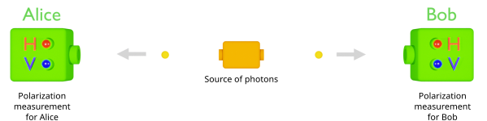
{kind=link}
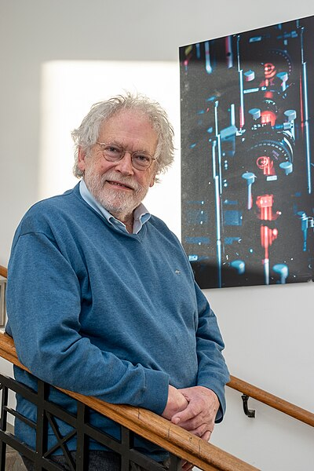
{kind=link}
Alice und Bob stellen ihre Detektoren auf verschiedene Winkel ein. Für jedes Photonenpaar notieren beide ihr Ergebnis: +1 oder −1.
Bei gleichen Winkeln: Perfekte Anti-Korrelation. Immer.
Bei 90° Unterschied: Keine Korrelation. Völlig zufällig.
Dazwischen: Eine glatte Kosinus-Kurve – und diese Kurve liegt jenseits der Bellschen Grenze.
Und die Experimente? Aspect (1982): \(S = 2{,}70\). Weihs und Zeilinger (1998): \(S = 2{,}73\). Hensen in Delft (2015, der erste lückenfreie Test): \(S = 2{,}42\). Alle über 2. Alle im Einklang mit \(2\sqrt{2}\). 2022 erhielten Alain Aspect, John Clauser und Anton Zeilinger dafür den Nobelpreis.
Was Verschränkung ist – und was nicht
Verschränkung ist keine Kommunikation (Bob kann aus seinen Ergebnissen allein nichts ablesen), keine Teleportation (nichts reist schneller als Licht), und keine Mystik (sie ist Mathematik, die sich im Labor bestätigt).
Was Verschränkung ist: Die Pfeile gehören dem Paar, nicht den einzelnen Teilchen. Die Buchhaltung der Natur kann nichtlokal sein – nicht weil Information schneller als Licht reist, sondern weil die Buchhaltung von Anfang an das ganze System umfasst.
Probier es selbst
In der Grafik kannst du Bells Experiment selbst durchführen. Wähle Messwinkel für Alice und Bob. Drücke „Measure“ und beobachte die Ergebnisse. Speichere Datenpunkte bei verschiedenen Winkeldifferenzen und beobachte, wie die Korrelationskurve die Bellsche Grenze durchbricht. Die Handschuhe hätten das nicht gekonnt.
Epilog
Was passiert, wenn du hinschaust?
Bisher haben wir ein Quantensystem beschrieben, das sich ungestört entwickelt – ohne dass jemand hinschaut. Die Wellenfunktion schwingt, die Pfeile rotieren, die Eigenzustände überlagern sich. Alles ist glatt und determiniert.
Aber was passiert, wenn du misst? Wenn du ein Elektron, das in einer Überlagerung von „hier“ und „dort“ existiert, mit einem Detektor abfängst – und es plötzlich hier ist, nur hier, mit Sicherheit?
Wohin ist die Überlagerung gegangen? War das Elektron schon vorher „hier“, und wir wussten es nur nicht? Oder hat die Messung die Realität erst geschaffen? Und wenn ja – was genau zählt als „Messung“?
Das ist das berühmte Messproblem – die offene Wunde der Quantenmechanik. Seit fast hundert Jahren streiten sich die klügsten Köpfe der Physik darüber, und es gibt keine Einigung.
Darüber sprechen wir – bald.
Häufige Fragen
Was ist das Pfadintegral?
Das Pfadintegral ist eine Formulierung der Quantenmechanik, die Richard Feynman 1948 entwickelt hat. Statt eine Wellengleichung zu lösen, summiert man über alle möglichen Wege, die ein Teilchen von A nach B nehmen kann. Jeder Weg bekommt einen „Pfeil“ (eine komplexe Amplitude), und die Summe aller Pfeile ergibt die Gesamtwahrscheinlichkeit.
Warum verschwindet das Interferenzmuster beim Messen?
Wenn man misst, durch welchen Spalt das Teilchen geht, werden die beiden Wege unterscheidbar. Nur bei ununterscheidbaren Wegen addiert man die Pfeile. Macht man sie unterscheidbar, gibt es pro Durchgang nur einen Pfeil – keine Addition, keine Interferenz. Es ist keine Mystik, sondern Buchhaltung.
Was ist der Unterschied zwischen Beugung und Interferenz?
Physikalisch gibt es keinen scharfen Unterschied – Feynman selbst sagte, dass niemand die beiden je zufriedenstellend unterscheiden konnte. Beugung ist die Auffächerung hinter einem einzelnen Spalt, Interferenz die Überlagerung von zwei oder mehr Spalten. Beides ist dasselbe Prinzip: Pfeile addieren.
Warum ist die Exponentialfunktion die einzige mögliche Quantenamplitude?
Die Quantenregeln verlangen: Wirkungen addieren sich bei aufeinanderfolgenden Wegstücken, Amplituden multiplizieren sich. Die einzige stetige Funktion, die Addition in Multiplikation verwandelt, ist die Exponentialfunktion. Zusammen mit der Forderung gleicher Pfeillänge (|A|=1) bleibt nur e^{iS/ħ} übrig.
Warum werden Fourier-Moden in der Quantenfeldtheorie benutzt?
In der QFT wird ein Feld im Raum in Fourier-Moden zerlegt – Sinuswellen verschiedener Wellenlängen. Jede Mode verhält sich wie ein harmonischer Oszillator mit diskreten Energieniveaus. Die Anregungszahl einer Mode entspricht der Anzahl der Teilchen mit dieser Wellenlänge. Fourier-Moden sind also keine mathematische Bequemlichkeit, sondern die fundamentalen Objekte der Theorie.
Ist die Unschärferelation ein physikalisches Gesetz?
Nein – sie ist ein mathematisches Theorem über Fourier-Transformationen. Wenn eine Funktion im Ortsraum schmal ist (lokalisiert), muss ihre Fourier-Transformierte breit sein (viele Wellenlängen), und umgekehrt. In der Physik übersetzt sich das zu: Ort und Impuls können nicht gleichzeitig beliebig scharf sein. Dasselbe Prinzip gilt in der Signalverarbeitung als Bandbreitensatz.